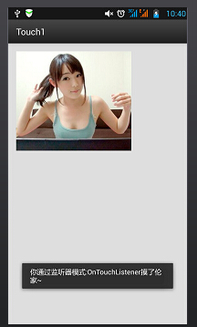
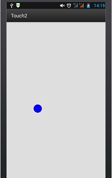

本节の導入：
タイトルの通り、本节では皆さんにTouchListenerとOnTouchEventの比較、そしてマルチタッチの知識ポイントをお届けします！ TouchListenerはリスナーに基づいており、OnTouchEventはコールバックに基づいています！以下では2つの簡単な例を通じて皆さんの理解を深めます！
1.リスナーに基づくTouchListener
コード例：
実装効果図：

実装コード： main.xml
<RelativeLayout xmlns:android="http://schemas.android.com/apk/res/android"
xmlns:tools="http://schemas.android.com/tools"
android:layout_width="match_parent"
android:layout_height="match_parent"
android:paddingLeft="@dimen/activity_horizontal_margin"
android:paddingRight="@dimen/activity_horizontal_margin"
android:paddingTop="@dimen/activity_vertical_margin"
android:paddingBottom="@dimen/activity_vertical_margin"
tools:context=".MyActivity">
<ImageView
android:layout_width="wrap_content"
android:layout_height="wrap_content"
android:id="@+id/imgtouch"
android:background="@drawable/touch"/>
</RelativeLayout>
MainAcitivity.java
public class MyActivity extends ActionBarActivity {
private ImageView imgtouch;
@Override
protected void onCreate(Bundle savedInstanceState) {
super.onCreate(savedInstanceState);
setContentView(R.layout.activity_my);
imgtouch = (ImageView)findViewById(R.id.imgtouch);
imgtouch.setOnTouchListener(new View.OnTouchListener() {
@Override
public boolean onTouch(View v, MotionEvent event) {
Toast.makeText(getApplicationContext(),"你通过监听器模式:OnTouchListener摸了伦家~",Toast.LENGTH_LONG).show();
return true;
}
});
}
}
コード解析：
シンプルにImageViewを設定し、setOnTouchListenerを呼び出して、onTouchメソッドをオーバーライドするだけです！とても簡単です。実はこれはフレームレイアウトの節で既に例がありました。あの指に沿って動く萌え妹子（かわいい女の子）を覚えていますか？
OnTouchListener関連のメソッドと属性:
onTouch(View v, MotionEvent event):ここのパラメータは順に、タッチイベントをトリガーしたコンポーネント、タッチイベントeventはトリガーされたイベントの詳細情報をカプセル化しており、イベントの種類やトリガー時間などの情報も含まれます。例えばevent.getX()、event.getY()などです。
タッチの動作タイプを判定することもできます。event.getAction()を使って判定します。例:
event.getAction == MotionEvent.ACTION_DOWN：押下イベント
event.getAction == MotionEvent.ACTION_MOVE：移動イベント
event.getAction == MotionEvent.ACTION_UP：リリースイベント
2.コールバックに基づくonTouchEvent( )メソッド
同じくタッチイベントですが、onTouchEventは主にカスタムviewで使用され、すべてのviewクラスでこのメソッドがオーバーライドされています。このタッチイベントはコールバックに基づいています。つまり、返り値がfalseの場合、イベントは外部へ伝播し続け、外側のコンテナやActivityによって処理されます！もちろんジェスチャー(Gesture)も関係しており、これについては後で詳しく説明します！onTouchEventは実はonTouchListenerと似ていますが、処理メカニズムが異なるだけで、前者はコールバック、後者はリスナーモードです！
コード例：シンプルなviewを定義し、青い小さな円を描画して、指に沿って移動できるようにします
実装コード： MyView.java
public class MyView extends View{
public float X = 50;
public float Y = 50;
//创建画笔
Paint paint = new Paint();
public MyView(Context context,AttributeSet set)
{
super(context,set);
}
@Override
public void onDraw(Canvas canvas) {
super.onDraw(canvas);
paint.setColor(Color.BLUE);
canvas.drawCircle(X,Y,30,paint);
}
@Override
public boolean onTouchEvent(MotionEvent event) {
this.X = event.getX();
this.Y = event.getY();
//通知组件进行重绘
this.invalidate();
return true;
}
}
main.xml:
<RelativeLayout xmlns:android="http://schemas.android.com/apk/res/android"
xmlns:tools="http://schemas.android.com/tools"
android:layout_width="match_parent"
android:layout_height="match_parent"
tools:context=".MyActivity">
<example.jay.com.touch2.MyView
android:layout_width="wrap_content"
android:layout_height="wrap_content" />
</RelativeLayout>
実装効果図：

指でタッチして移動します〜3.マルチタッチ
原理に関するもの：
いわゆるマルチタッチとは、複数の指で画面上を操作することです。最も多く使われるのは拡大・縮小機能でしょう。例えば多くの画像ビューアーがズームをサポートしています！理論上、Androidシステム自体は最大256本の指のタッチを処理できますが、もちろんこれはスマートフォンのハードウェアのサポートに依存します。ただしマルチタッチ対応のスマートフォンは一般的に2〜4点をサポートしており、もちろんそれ以上の場合もあります！前述の2つのポイントではどちらもMotionEventを使用していることがわかります。MotionEventは1つのタッチイベントを表します。私たちはevent.getAction() & MotionEvent.ACTION_MASKによってどの操作かを判断できます。上記で紹介した3つの単点操作の他に、マルチタッチ専用の操作が2つあります：
- MotionEvent.ACTION_POINTER_DOWN：画面上で既に1つの点が押されている状態で、さらに他の点を押したときにトリガーされます。
- MotionEvent.ACTION_POINTER_UP：画面上で複数の点が押されている状態で、そのうちの1つの点を離したときにトリガーされます（つまり最後の点以外が離されたとき）。
簡単な流れはだいたい次のようになります：
- 1本の指で画面にタッチする ——> ACTION_DOWNイベントがトリガーされる
- 続いて別の指も画面にタッチする ——> ACTION_POINTER_DOWNイベントがトリガーされる。さらに他の指がタッチすれば、引き続きトリガーされる
- 1本の指が画面から離れる ——> ACTION_POINTER_UPイベントがトリガーされる。さらに指が離れれば、引き続きトリガーされる
- 最後の指が画面から離れる ——> ACTION_UPイベントがトリガーされる
- そしてこの整个过程において、ACTION_MOVEイベントは絶えずトリガーされ続けます
私たちはevent.getX(int)またはevent.getY(int)を使用して異なるタッチポイントの位置を取得できます： 例えばevent.getX(0)で最初の接触点のX座標を取得でき、event.getX(1)で2番目の接触点のX座標を取得できます... また、MotionEventオブジェクトのgetPointerCount()メソッドを呼び出して、現在何本の指がタッチしているかを判断することもできます〜
コード例：
では、最も一般的な単指で画像をドラッグ、二指で画像をズームする例を書いてみましょう：
実装効果図：

実装コード：
<?xml version="1.0" encoding="utf-8"?>
<RelativeLayout xmlns:android="http://schemas.android.com/apk/res/android"
android:layout_width="match_parent"
android:layout_height="match_parent" >
<ImageView
android:id="@+id/img_test"
android:layout_width="match_parent"
android:layout_height="match_parent"
android:scaleType="matrix"
android:src="@drawable/pic1.html" />
</RelativeLayout>
MainActivity.java
package com.jay.example.edittextdemo;
import android.app.Activity;
import android.graphics.Matrix;
import android.graphics.PointF;
import android.os.Bundle;
import android.util.FloatMath;
import android.view.MotionEvent;
import android.view.View;
import android.view.View.OnTouchListener;
import android.widget.ImageView;
public class MainActivity extends Activity implements OnTouchListener {
private ImageView img_test;
// 縮放控制
private Matrix matrix = new Matrix();
private Matrix savedMatrix = new Matrix();
// 不同状态的表示：
private static final int NONE = 0;
private static final int DRAG = 1;
private static final int ZOOM = 2;
private int mode = NONE;
// 定义第一个按下的点，两只接触点的重点，以及出事的两指按下的距离：
private PointF startPoint = new PointF();
private PointF midPoint = new PointF();
private float oriDis = 1f;
/*
* (non-Javadoc)
*
* @see android.app.Activity#onCreate(android.os.Bundle)
*/
@Override
protected void onCreate(Bundle savedInstanceState) {
super.onCreate(savedInstanceState);
setContentView(R.layout.activity_main);
img_test = (ImageView) this.findViewById(R.id.img_test);
img_test.setOnTouchListener(this);
}
@Override
public boolean onTouch(View v, MotionEvent event) {
ImageView view = (ImageView) v;
switch (event.getAction() & MotionEvent.ACTION_MASK) {
// 单指
case MotionEvent.ACTION_DOWN:
matrix.set(view.getImageMatrix());
savedMatrix.set(matrix);
startPoint.set(event.getX(), event.getY());
mode = DRAG;
break;
// 双指
case MotionEvent.ACTION_POINTER_DOWN:
oriDis = distance(event);
if (oriDis > 10f) {
savedMatrix.set(matrix);
midPoint = middle(event);
mode = ZOOM;
}
break;
// 手指放开
case MotionEvent.ACTION_UP:
case MotionEvent.ACTION_POINTER_UP:
mode = NONE;
break;
// 单指滑动事件
case MotionEvent.ACTION_MOVE:
if (mode == DRAG) {
// 是一个手指拖动
matrix.set(savedMatrix);
matrix.postTranslate(event.getX() - startPoint.x, event.getY() - startPoint.y);
} else if (mode == ZOOM) {
// 两个手指滑动
float newDist = distance(event);
if (newDist > 10f) {
matrix.set(savedMatrix);
float scale = newDist / oriDis;
matrix.postScale(scale, scale, midPoint.x, midPoint.y);
}
}
break;
}
// 设置ImageView的Matrix
view.setImageMatrix(matrix);
return true;
}
// 计算两个触摸点之间的距离
private float distance(MotionEvent event) {
float x = event.getX(0) - event.getX(1);
float y = event.getY(0) - event.getY(1);
return FloatMath.sqrt(x * x + y * y);
}
// 计算两个触摸点的中点
private PointF middle(MotionEvent event) {
float x = event.getX(0) + event.getX(1);
float y = event.getY(0) + event.getY(1);
return new PointF(x / 2, y / 2);
}
}
本节のまとめ：
はい、TouchListenerについてとOnTouchEventおよびマルチタッチはここまでです〜